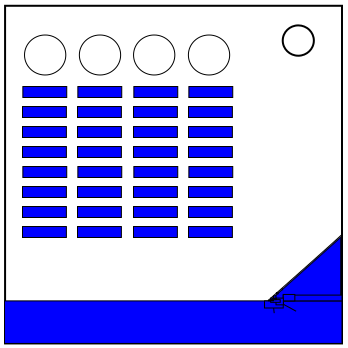

On the Subject of Dominoes
There’s the two types of ways to use ‘em, as a game or as an open sandbox.
The top of the module has busted buttons which can only be pressed with the help of the lines of dominoes. Determine the order in which to press these buttons to solve the module.
Tilt the module to look at the face of the domino at the front of each line. Each domino line has a value, determined by the pips present on the front domino. The values of each domino line, and which order to topple the lines down in, can be found below. If multiple domino lines have the same value, topple them from left to right.
Determining domino line values
If there are more than 2 ports on the bomb, use the total number of pips.
Otherwise, if there are more than 2 batteries on the bomb, take the number of pips on the top half, then subtract the number of pips from the bottom half.
Otherwise, if a lit indicator is present, use the product of the number of pips on the top half and the number of pips on the bottom half.
Otherwise, divide the number of pips on the bottom half by the number of pips on the top half.
Determining topple order
If there are more lit indicators than unlit indicators, topple the dominoes in ascending order of their values.
Otherwise, if there are more unlit indicators than lit indicators, or the third character of the serial number is even, topple the dominoes in descending order of their values.
Otherwise, topple the dominoes in ascending order of their values.
If a button is pushed down by a domino line out of order, a strike will occur and the module will reset.